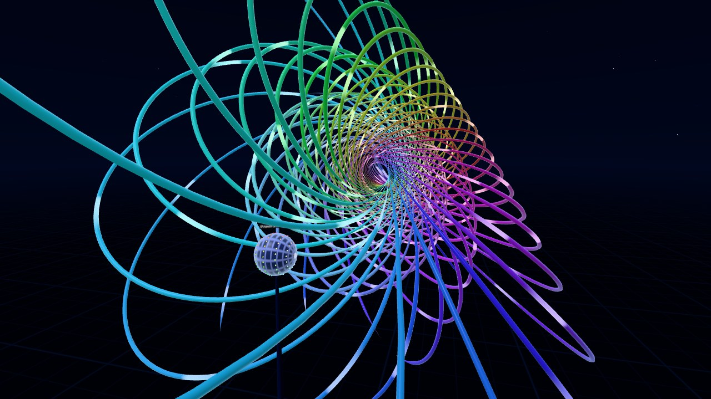

The Hopf Fibration
Hopf Garden is an interactive version of the Hopf fibration. There's a globe in front of you, and touching a point on it adds that point's circle (its fiber) to the space around the globe.

Works in a desktop browser, on a phone, or in the Quest Browser. Press Enter VR on the start screen to use a headset.
What You're Looking At
The Hopf fibration splits the 3-sphere (S³, all the unit vectors in 4D) into circles. There's exactly one circle for each point on an ordinary 2-sphere, and no two of them touch. The globe in the scene is that 2-sphere, and each fiber is drawn in the color of the point it belongs to.
S³ doesn't fit in 3D, so the fibers are stereographically projected. Every circle stays a circle after that, except the one through the projection point, which becomes a straight line. Sizes get distorted a lot though. Fibers close to the projection point come out huge, so they fade out before they reach the floor or your head.
With quaternions, a unit quaternion q maps to q i q̄ on the 2-sphere, and the fiber over that point is every q eiθ. That's what the scene uses. Rotating the globe by a unit quaternion u maps q to u q, which is a 4D rotation that keeps every fiber over its point.
Things to Try
- Add two fibers anywhere. Any two fibers are linked once, like links in a chain.
- Drag along a circle on the globe. The fibers over a circle fill in a torus.
- Try the presets: nested tori, the Clifford torus (the fibers over the equator), a Hopf link, and a spiral.
- Rotate the globe and every fiber follows its point around.
- Rotate S³ through 4D instead. The circles are the same, but the projection is from a different point, so the whole picture changes shape.
Controls
In VR, touch the globe with a finger or controller to add fibers. Pinch the globe and turn your hand to rotate it, or pinch empty space and drag to rotate S³ in 4D. With controllers it's the trigger or grip instead of a pinch.
On a desktop, drag on the globe to add fibers. Right-drag the globe to rotate it, and right-drag empty space to rotate S³ in 4D. C clears the fibers and Space starts or stops the auto-rotation. It holds up to 360 fibers.
For more on the math, Niles Johnson's Hopf fibration page and video are a good place to start. They were one of the references I used for this scene.